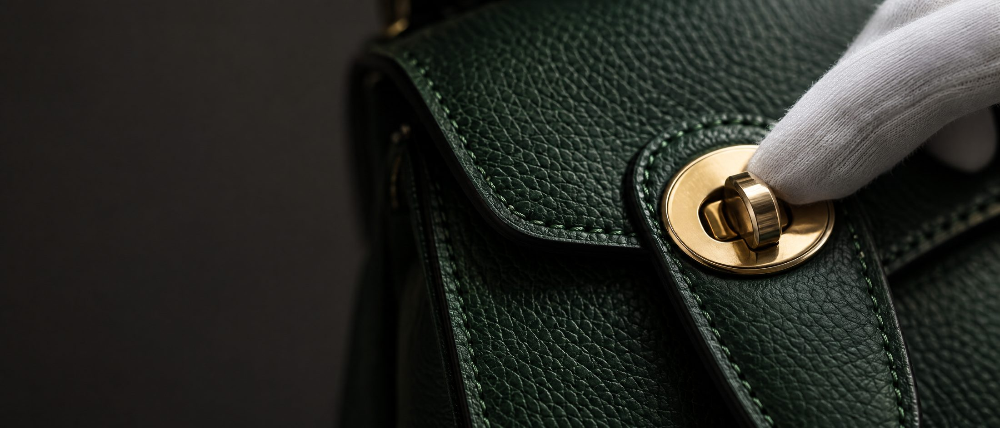
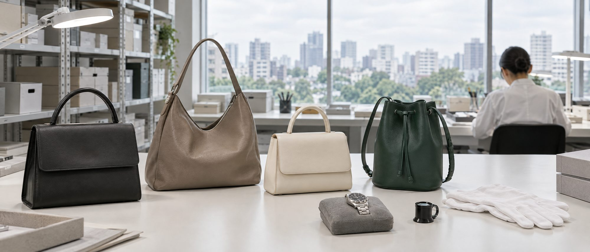

From Japan's dealer‑only auctions, to your door.
Pre‑owned Hermès, Rolex, Chanel and more — inspected in Tokyo, priced in dollars, duties prepaid.
Live now
Premium Auction
24,132 lots · next lot closes in —
Prices are shown to members · Log in or create a free account
Browse by category
New this week
How buying works
- 1Register and bid in dollars
Email and password, no licence or broker. Set a max bid — a late bid adds time.
- 2We buy and inspect in Tokyo
We win it at the dealer auction and check it by hand before it ships.
- 3Delivered, duties prepaid
One total, confirmed before you pay. 6–10 days to your door, nothing on arrival.

Run from Tokyo
Every piece passes through our Tokyo office before it ships — checked by hand against the auction house's notes, then packed to keep its shape. How it works